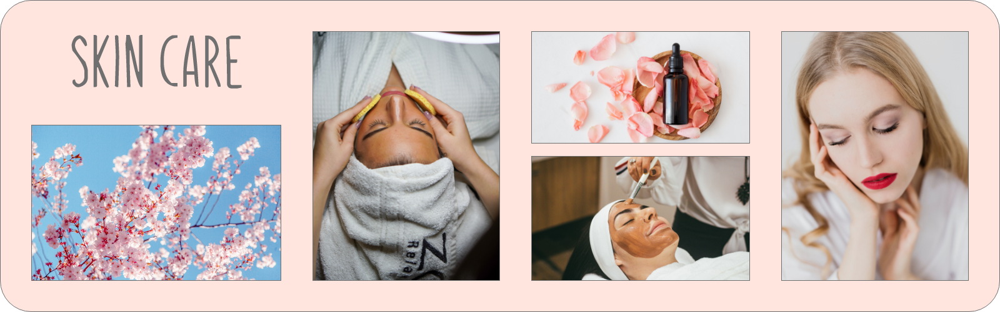

SKIN CARE

Below are the list of services and their respective description. We do care about your Skin.
Facial Clean-up - Beauty lies skin deep.
Face clean-up is a simple skin care regime to get rid of dead cells and dirt. Not only it reveals a radiant skin, but also keeps blemishes and acne at bay. Face clean-up are cleansing, scrubbing, steaming, removal of blackheads and whiteheads and applying a face pack The relaxing massage strokes during a face clean-up nourish your skin from deep within, relieving stress
Facial - Glow the day
A facial is essentially a multi-step skin treatment that is one of the best ways to take care of your skin. A facial cleanses, exfoliates, and nourishes the skin, promoting a clear, well-hydrated complexion and can help your skin look younger. we use products containing vital minerals and nutrients that reduce wrinkles and remove dead skin, giving you a youthful appearance. Black mud, fruit acids, vitamins, enzymes, gold and anti-oxidants are just a few of the special ingredients found in our facials.